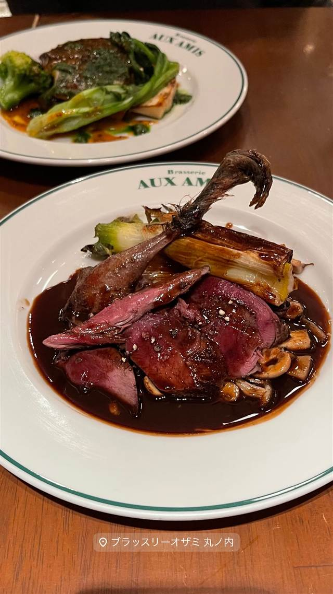

エスニック・各国料理 · ドイツ · 有楽町
ドイツ居酒屋 JSレネップ
1978年創業、ドイツパンは名古屋の名店に特注する老舗居酒屋
JSレネップ
1978年創業、有楽町の高架下にある老舗ドイツ居酒屋。ドイツから直輸入した樽生ビールやワイン、ソーセージで本場の味を提供し、オリジナルのドイツパンは名古屋の名店に特注するというこだわりを持つ。日比谷オクロジ内には隠れ家的な系列店『ハナレ』もある。
TRIVIA
豆知識
- 店名『レネップ』はドイツ・レムシャイト市にある地区『Lennep』と同じ読み
- オリジナルのドイツパンはドイツ直輸入品に加え、名古屋の名店『ベッカライ宮川』にも製作を依頼している
- 1978年創業から有楽町の高架下という立地を守り続けている老舗
REVIEWS
世間の評判
3.49食べログ
樽生ドイツビールとソーセージ
- 樽生のドイツビールの種類が豊富で飲み比べを楽しめるという声が多い
- 肉汁たっぷりのソーセージやホロホロのアイスバインを評価する声が多い
- 店内が賑やかで話し声が大きく感じるという声がある
- 満席になりやすく予約が推奨されるという声もある
食べログ 口コミ1001件
| 創業 | 1978年創業 |
|---|---|
| 看板 | 本場ドイツ直輸入の樽生ビール・ワイン・ソーセージ、鉄板料理などドイツ郷土料理全般 |
| こだわり | ドイツから直輸入した食材に加え、店オリジナルのドイツパンは名古屋の有名ドイツパン職人『ベッカライ宮川』に製作を依頼している。 |
| どこから | 都心 |
| 営業時間 | 月 16:00-22:30 火〜木 16:00-23:15 金 16:00-23:30 土 12:00-23:00 日 12:00-22:30 |
| 予算 | 昼 ¥1,000～¥1,999 夜 ¥3,000～¥3,999 |
| 場所 | 日比谷 東京都千代田区有楽町2-1-8 |
| メモ | 有楽町の高架下にある老舗ドイツ居酒屋。系列店として日比谷オクロジ内に隠れ家的な『JSレネップ ハナレ』もある。 |
食べたもの：鉄板料理
NEARBY
近い店・同じ系統の店
-
 パスタ 有楽町／日比谷
壁の穴 日比谷シャンテ店
キャビアの代わりに使ったたらこが名物になった元祖たらこスパゲッティ
夜 ¥1,000～¥1,999
パスタ 有楽町／日比谷
壁の穴 日比谷シャンテ店
キャビアの代わりに使ったたらこが名物になった元祖たらこスパゲッティ
夜 ¥1,000～¥1,999
-
 ベトナム 有楽町
Ya Kun Kaya Toast 東京国際フォーラム店
1944年シンガポール創業の自家製カヤジャムトースト
昼 ～¥999 夜 ～¥999
ベトナム 有楽町
Ya Kun Kaya Toast 東京国際フォーラム店
1944年シンガポール創業の自家製カヤジャムトースト
昼 ～¥999 夜 ～¥999
-
 ケーキ・パフェ 有楽町
THE STAND（ザ スタンド）
銀座のフレンチバル監修、店内手焼きの自家製カヌレ
夜 ¥2,000～¥2,999
ケーキ・パフェ 有楽町
THE STAND（ザ スタンド）
銀座のフレンチバル監修、店内手焼きの自家製カヌレ
夜 ¥2,000～¥2,999
-
 スペイン料理 二重橋前駅・日比谷駅
ADRIFT by David Myers
ミシュラン店出身シェフが仕立てるカリフォルニア風パエリア
昼 ¥1,000～¥1,999 夜 ¥5,000～¥5,999
スペイン料理 二重橋前駅・日比谷駅
ADRIFT by David Myers
ミシュラン店出身シェフが仕立てるカリフォルニア風パエリア
昼 ¥1,000～¥1,999 夜 ¥5,000～¥5,999
-

ビストロ 有楽町駅 ブラッスリーオザミ 丸の内 パリの下町を再現した店内で味わう鴨のコンフィ 昼 ¥2,000～¥2,999 夜 ¥3,000～¥3,999 -
 塩 有楽町
麺屋ひょっとこ 交通会館店
柚子香る鶏と魚介の塩ラーメン、百名店に5年連続選出
昼 ～¥999 夜 ～¥999
塩 有楽町
麺屋ひょっとこ 交通会館店
柚子香る鶏と魚介の塩ラーメン、百名店に5年連続選出
昼 ～¥999 夜 ～¥999